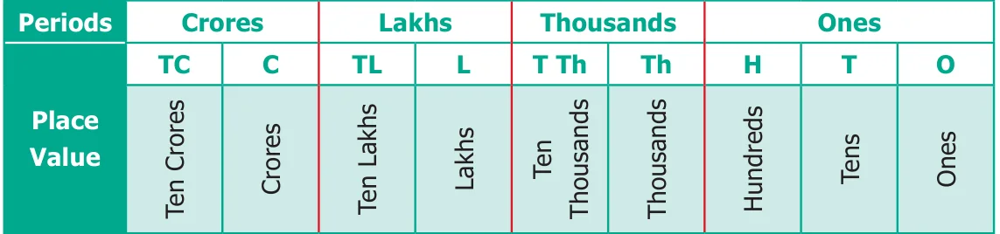
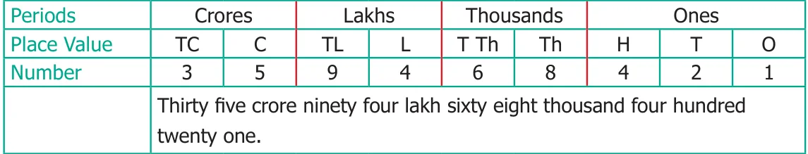
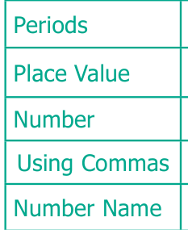
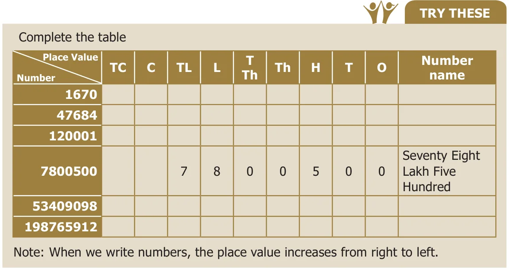
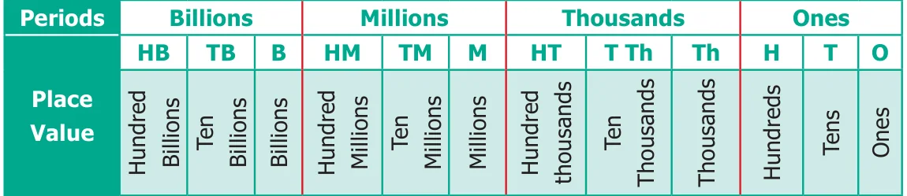
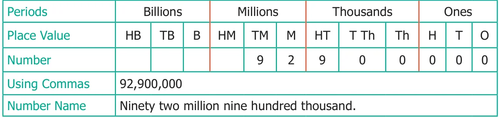
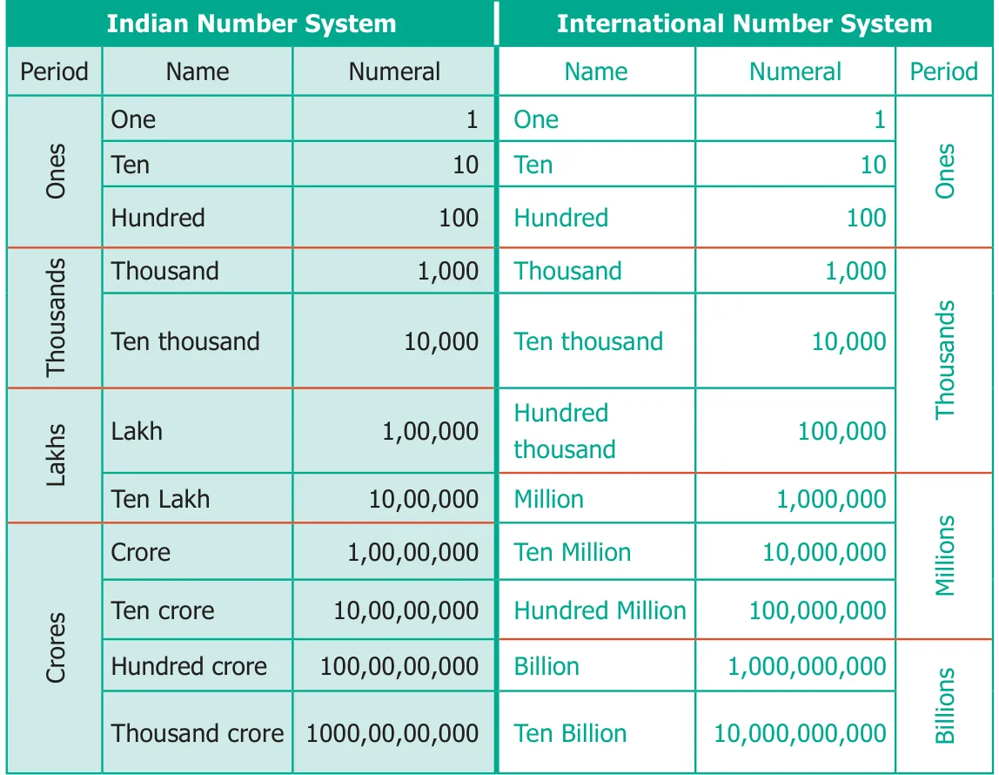
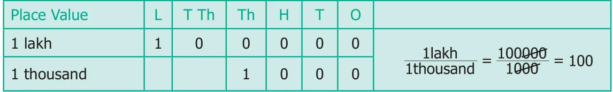
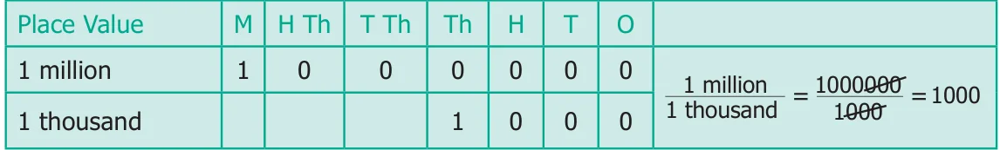

1.3.1 Indian Method

When we write large numbers we make use of place value chart to ensure that we do not miss any digit in between, while writing it. In a given number, starting from the right, the first three places make the ones period, the next two places make the thousands period, the next two places make the lakhs period and the next places make the crores period. Try to read the number 359468421. Is it difficult? Yes. It is not easy. But by using the indicators or the periods, it is easy to read and write 359468421 as under.

Use of Comma
In any given number, we separate the periods by using commas. In our Indian System of Numeration, we use commas from the right. The first comma comes before Hundreds place (3 digits from the right). The second comma comes before Ten Thousands place (5 digits from the right). The third comma comes before Ten Lakhs place (7 digits from the right) and the digits next to it represents crore.
Example 1.1
The distance between the Sun and the Earth is about 92900000 miles. Read and write the number in the Indian method.
Solution

Crores Lakhs Thousands Ones
C TL L T Th Th H T O
9,29,00,000
Nine crore twenty nine lakh.

1.3.2 International Method
This system is followed by many countries in the world.

In a given number, starting from the right, the first three places make the ones period, the next three places make the thousands period, the next three places make the million period and the next three places make the billion period etc.
Read and write 35694568421 in the international method
Periods Place Value \(HB \frac{Billions}{TB} B HM \frac{Millions}{TM} M HT \frac{Thousands}{T\) Th} Th \(H \frac{Ones}{T} O\) Number \(\frac{3}{35\) Billions} \(5 6 \frac{9}{694\) Millions} 4 5568 Thousands6 \(8 4 \frac{2}{421\) Ones} 1 Number Name Thirty five billion six hundred ninety four million five hundred sixty eight thousand four hundred twenty one.
Use of Commas
In the International System of Numeration, we use Ones, Tens, Hundreds, Thousands, Ten Thousands, Hundred Thousands, Million, Ten Million, Hundred Million and Billion, Ten Billion, Hundred Billion. Commas are used to mark Thousands, Millions and Billions.
Example 1.2
The distance between the Sun and the Earth is about 92900000 miles. Read and write the number in the International Method.
Solution

1.3.3 Comparison of Number Systems
We can easily understand both the Indian and the International Number Systems from the following table.

With the help of the above table, we can read the number 57340000 as 5,73,40,000 (Five Crore Seventy Three Lakh Forty Thousand) in the Indian System and as 57,340,000 (Fifty Seven Million Three Hundred Forty Thousand) in the International System.
Try These
Identify the incorrectly placed comma and rewrite correctly.
Indian System : (i) 56,12,34,0,1,5 (ii) 9,90,03,2245
International System : (i) 7,5613,4534 (ii) 30,30,304,040
Activity
Take a white chart and cut into 9 equal pieces. Write different numbers on each piece. Arrange the pieces, as many times, horizontally which form different numbers. Write any five different numbers and express them in the Indian and the International System.
1.3.4 Place Value of digits in Large Numbers
Every digit of a number has a place value which gives the value of the digit. Write the number 676097 in expanded form: Number : 6,76,097 Expanded form : 6 lakhs \(+ 7\) ten thousands \(+ 6\) thousands \(+ 0\) hundreds \(+ 9\) tens \(+ 7\) ones
: \(6 \times 100000 + 7 \times 10000 + 6 \times 1000 + 0 \times 100 + 9 \times 10 + 7 \times 1\) : \(600000 + 70000 + 6000 + 90 + 7\)
Finding the place value of all the digits in 9847056:
The Place value of 6 is \(= 6\) Ones \(= 6 \times 1 = 6\) The Place value of 5 is \(= 5\) Tens \(= 5 \times 10 = 50\) The Place value of 0 is \(= 0\) Hundreds \(= 0 \times 100 = 0\) The Place value of 7 is \(= 7\) Thousands \(= 7 \times 1000 = 7,000\) The Place value of 4 is \(= 4\) Ten Thousands \(= 4 \times 10000 = 40,000\) The Place value of 8 is \(= 8\) Lakhs \(= 8 \times 100000 = 8,00,000\) The Place value of 9 is \(= 9\) Ten Lakhs \(= 9 \times 1000000 = 90,00,000\)
Hence, the number 98,47,056 is read as Ninety Eight Lakh Forty Seven Thousand Fifty Six.
Try These
- Expand the following numbers:
- 2304567
- 4509888
- 9553556
- Find the place value of underlined digits.
- 3841567
- 9443810
- Write down the numerals and place value of 5 in the numbers represented by the following number names.
- Forty Seven Lakh Thirty Eight Thousand Five Hundred Sixty One.
- Nine Crore Eighty Two Lakh Fifty Thousand Two Hundred Forty One.
- Nineteen Crore Fifty Seven Lakh Sixty Thousand Three Hundred Seventy.
Example 1.3
How many thousands are there in 1 lakh?
Solution

Lakh is 2 places to the left of thousand. So, it is \(10 \times 10 = 100\) times thousand. Hence, 1 lakh = 100 thousands.
Example 1.4
How many thousands are there in 1 million?
Solution

Million is 3 places to the left of Thousand. 1000 Thousands \((1000 \times 1000 = 1{,}000{,}000)\) are in a million.
Try These
- How many hundreds are there in 10 lakh?
- How many lakhs are there in a million?
- 10 lakh candidates write the Public Exam this year. If each exam centre is allotted with 1000 candidates. How many exam centres would be needed?